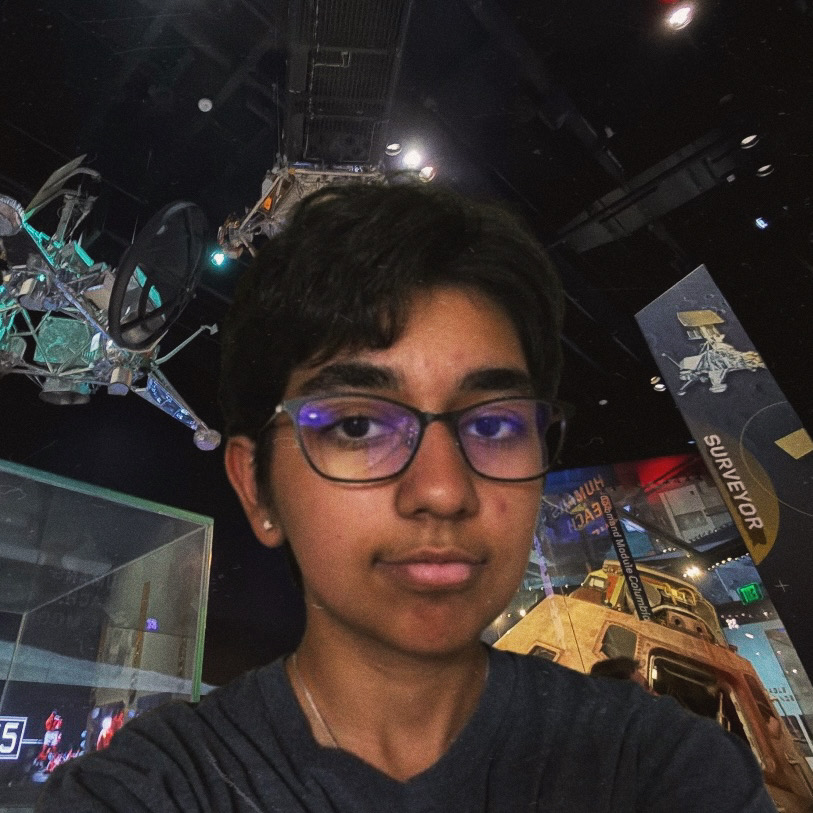

Rhea and Nico Tutoring
Rhea Sadhwani

Hello! My name is Rhea
and I am a senior at
Newport High School
pursuing CS/AeroE, as
well as a part time Math Instructor at Mathnasium!
I have been tutoring students for subjects ranging from math and physics, to python for 6+ years.
I always prioritize establishing a fundamental understanding of each concept before moving onto sharpening speed and accuracy.
Having tutored for many years, I have worked with students with many different learning styles, and have forged a wide range of teaching techniques to ensure my lessons cater to each individual student!
and I am a senior at
Newport High School
pursuing CS/AeroE, as
well as a part time Math Instructor at Mathnasium!
I have been tutoring students for subjects ranging from math and physics, to python for 6+ years.
I always prioritize establishing a fundamental understanding of each concept before moving onto sharpening speed and accuracy.
Having tutored for many years, I have worked with students with many different learning styles, and have forged a wide range of teaching techniques to ensure my lessons cater to each individual student!
Nico Yang

Hi there!
My name is Nico,
and I'm studying chemical
engineering at the
University of Washington.
I'm super passionate about all things STEM and education!
I started attending UW after my 10th grade year at Newport High School through the Robinson Center. As a result, I can empathize and relate to your students, having lived through it myself in recent years, whilst still having a college-level grasp of content.
I can help you with anything from conceptual understanding, to lab reports, and homework problems. Reach out anytime!
My name is Nico,
and I'm studying chemical
engineering at the
University of Washington.
I'm super passionate about all things STEM and education!
I started attending UW after my 10th grade year at Newport High School through the Robinson Center. As a result, I can empathize and relate to your students, having lived through it myself in recent years, whilst still having a college-level grasp of content.
I can help you with anything from conceptual understanding, to lab reports, and homework problems. Reach out anytime!